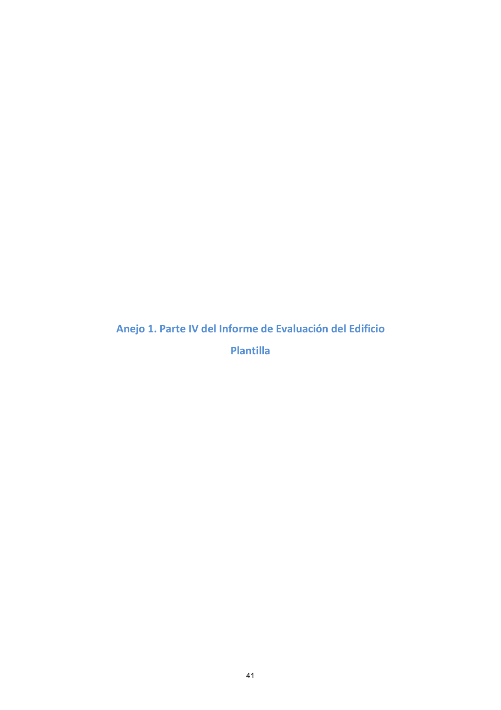

GUIA · Anejo 1. Parte IV del Informe de Evaluación del Edificio · versión 2016-11-01 · capa guia
Formatos: JSON compacto · Markdown · PDF fuente
Ámbito del documento · texto del ámbito · documento y tablas
Tipo: tablas, figuras · nivel 1 · sección estimada: Anejo 1. Parte IV del Informe de Evaluación del Edificio · padre:
Anejo 1. Parte IV del Informe de Evaluación del Edificio Plantilla

PDF fuente redistribuible: copia fiel enlazada en esta página (SHA256 verificado).